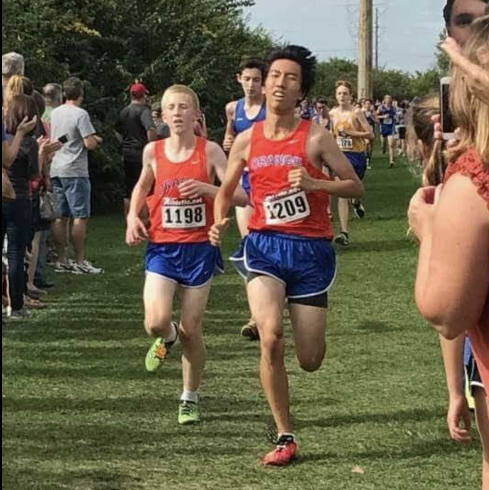

SOME THINGS I ENJOY...
|  |  |
∘ Orange High School (Division 1) -> Ohio State Running Club
∘ 2 x Academic All-State in T&F and XC
∘ All-Conference Honorable Mention in XC
∘ District, Region, State Qulifier in 4x800m
∘ School Record ~ Freshman 4x800m (2017 - Present)
∘ 1600m - 4:38 | 5000m - 16:32
∘ Played for my high school's Snareline under the direction of Craig Dunn from RhythmX.
∘ Was selected to perform Handel’s Messiah with the Columbus Symphony Orchestra.
∘ Played violin for my high school's orchestra (4 year varsity letter).
∘ Played fingerstyle guitar since 2013.
 |
∘ Founder & leader of ERCF, a group of passionate musicians, based in South Korea.
∘ Produced, mixed, and mastered 70+ tracks for ERCF during the career.
∘ Composed/produced total of 300+ instrumental tracks during the career.
∘ Recieved a rating of 1 in Class A in the OMEA Composition Contest.